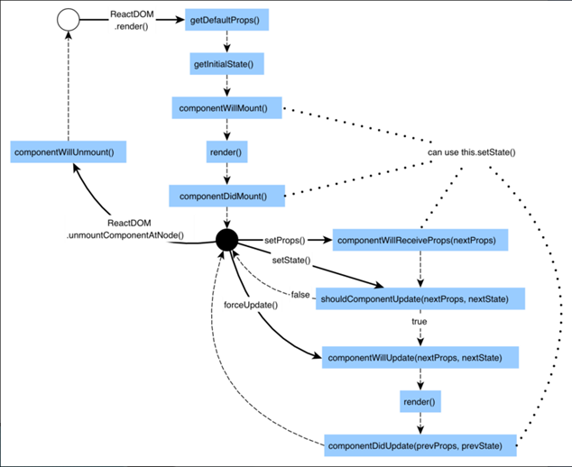
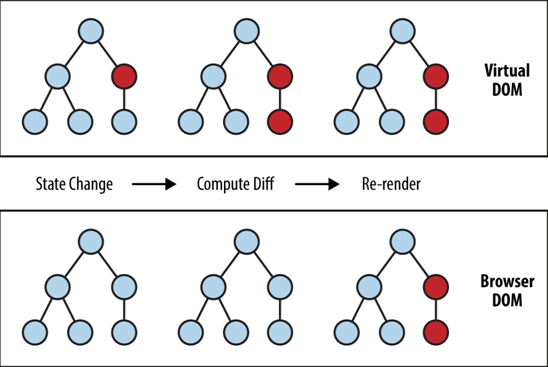
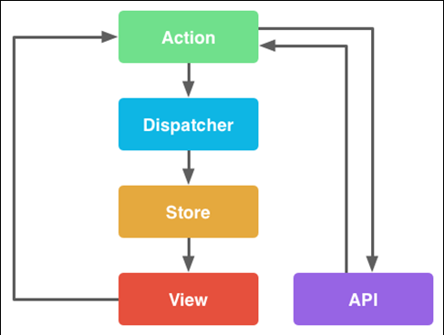
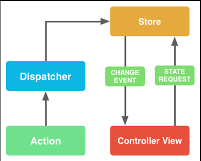
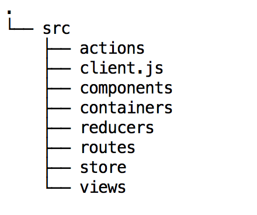
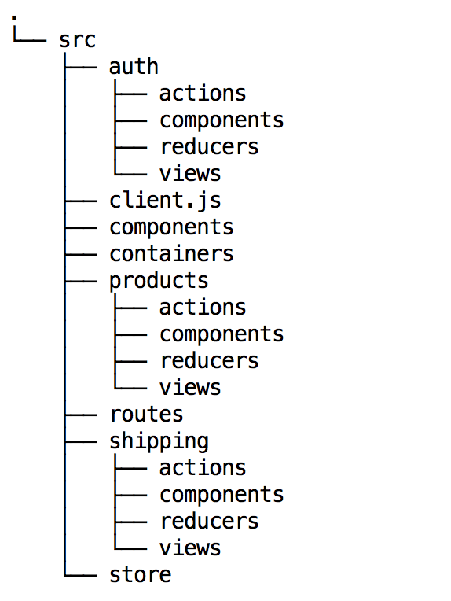

Understanding Nodejs
- JavaScript runtime built on Chrome's V8 JavaScript engine.
- Uses an event-driven, non-blocking I/O model that makes it lightweight and efficient.
- Lightweight and efficient, perfect for data-intensive real-time applications.
Run across distributed devices.
NodeJS:https://nodejs.org/Node.js®
Traditional web-serving techniques
- Each connection (request) Spawns a new thread
- Takes up system RAM and eventually maxing-out at the amount of RAM available


- Operates on a single-thread
- Using non-blocking I/O calls
- Allowing it to support tens of thousands of concurrent connections


- Node.js achieves scalability levels of over 1M concurrent connections.
- Let’s take a very simple piece of code like this:
var result = database.query("SELECT * FROM hugetable"); console.log("Hello World"); - The execution model of Node.js is different
- There is only one single process
- If there is a slow database query somewhere in this process, this affects the whole process
- Everything comes to a halt until the slow query has finished.
- To avoid this Node.js introduces the concept of event-driven, asynchronous callbacks, by utilizing an event loop.
database.query("SELECT * FROM hugetable", function(rows) { var result = rows; }); console.log("Hello World"); - Node.js can handle the database request asynchronously
- Instead of waiting for query to be finished, node makes a mental note that says “When at some point in the future the database query is done, then I have to execute the anonymous function.”
.png)
.png)
.png)
.png)
.png)
.png)
.png)
.png)
.png)
.png)
.png)
.png)
.png)
.png)
.png)
.png)
.png)
.png)
.png)
.png)
.png)
.png)
.png)
.png)
.png)
var http = require("http");
var server = http.createSErver(function(request, response)){
response.writeHead(200, {"Content-Type": "text/html"});
let title = "My Page";
let heading = "Hello World";
let page = "<!DOCTYPE html><html><head>"+
"<title>"+title+"</title></heat>"+
"<body><h1>"+heading+"<h1></body>"+
"</html>";
response.write(page);
response.end();
});
server.listen(80);
console.log("Server is listening on localhost");
- Comes by default with every Node.js installation
- Built-in support for package management using the NPM tool
- A set of publicly available, reusable components, available through easy installation via an online repository, with version and dependency management.
- React is
- Open source, maintained by Facebook
- JS library for creating UI
- Can be seen as V in MVC
- Ideal for large scale single page application
- Uses a high speed VirtualDOM
- Uses clean and easy to understand JSX syntax
- React is fast.
- Apps can handle complex updates and still feel quick and responsive.
- React is modular.
- Write many smaller, reusable files.
- Solution to JavaScript's maintainability problems.
- React is scalable.
- Large programs that display a lot of changing data are where React performs best.
- React is flexible.
- You can use React for interesting projects that have nothing to do with making a web app.
- React is popular.
- Package manager - npm
- Lets you take advantage of a vast ecosystem of third-party packages, and easily install or update them.
- Compiler- Babel
- Lets you write modern JavaScript code that still works in older browsers.
- Bundler- webpack or Reactify
- Lets you write modular code and bundle it together into small packages to opeimize load time.
To install React with npm, run:
npm install --save react react-dom
- React and ReactDOM were only recently split into two different libraries.
- Prior to v0.14, all ReactDOM functionality was part of React.
Using a CDN
To load a specific version of react and react-dom,
replace 15 with the version number.
replace 15 with the version number.
import React from 'react';
import ReactDOM from 'react-dom';
ReactDOM.render(
<h1>Hello, world!</h1>
document.getElementById('title')
);
- JSX is a statically-typed, object-oriented programming language compiling to standalone JavaScript.
- The first thing you'll notice is the XML-ish syntax in your JavaScript.
class SubjectList extends React.Component {
render() {
return
React.createElement('div', {className: ‘subject-list'},
React.createElement('h2', {}, ‘Subjects List for {this.props.name}’),
React.createElement('ul', {},
React.createElement(‘li', {}, "Math") ,
React.createElement(‘li', {}, "English") ,
React.createElement(‘li', {}, "Javascript")
);
);
}
}
// Example usage: <SubjectList name=“Miley" />
class SubjectList extends React.Component {
render() {
return (
<div className=‘subject-list’>
<h2>Subjects List for {this.props.name}</h2>
<ul>
<li>Math</li>
<li>English</li>
<li>JavaScript</li>
</ul>
</div>
);
}
}
// Example usage: < SubjectList name=“Miley" />

- Way of representing a structured document via objects
- Compare it to a process being an instance of a program.
- You can have multiple processes of the same one program
- Just like you can have multiple DOMs of the same HTML
- The same page loaded on many tabs
- DOM is always tree-structured.
- This is cool because we can traverse trees fairly
easily .- Unfortunately,
easily doesn’t meanquickly here.
- Unfortunately,
- The main problem is that DOM was never optimized for creating dynamic UI.
- Consider a DOM made of thousands of divs. Remember, we are modern web developers, our app is very SPA!
- Try to move a 1000 divs 5 pixel left for example.
It may take more than a second. It’s a lot of time for the modern web. - You can optimize the script and use some tricks, but in the end, it’s a pain to work with huge pages and dynamic UI.
- It is lightweight and detached from the browser-specific implementation details.
- Since the DOM itself was already an abstraction, the virtual DOM is, in fact, an abstraction of an abstraction.
- Think of the virtual DOM as React’s local and simplified copy of the HTML DOM
- Allows React to do its computations within this abstract world and skip the “real” DOM operations

- React builds a new virtual DOM subtree
- diffs it with the old one
- computes the minimal set of DOM mutations and puts them in a queue
- and batch executes all updates
- This is the primary type in React.
- Light,
stateless , immutable, virtual representation of a DOM Element. - Lives in the virtual DOM
- Their immutability makes them easy and fast to compare and update. This is the reason of great React performance.
- They are stateless, therefore don’t seem to be very helpful for the programmers
JSX compiles HTML tags to ReactElements:
var root = <div>hello world</div>;
ReactDOM.render(root,document.getElementById('example'));.
- What differs ReactComponent from ReactElement is - ReactComponents are
stateful .
var CommentBox = React.createClass({
render: function() {
return (
<div className="commentBox">
Hello, world! I am a CommentBox.
</div>
);
}
});
- With React you simply pass your event handler as a camelCased prop
- React ensures that all events behave similarly in all browsers
- by implementing a synthetic event system
- Under the Hood
- Autobinding
- Event Delegation
- When creating callbacks in JavaScript, you usually need to explicitly bind a method to its instance such that the value of 'this' is correct.
var person = {firstName: ‘Black', lastName: ‘Mark'};
function say() {
console.log('Hello ' + this.firstName + ' ' + this.lastName);
}
var sayHello = say.bind(person);
sayHello(); // Hello Black Mark
- React doesn't actually attach event handlers to the nodes themselves.
- When React starts up
- It starts listening for all events at the top level using a single event listener.
- When a component is mounted or unmounted
- the event handlers are simply added or removed from an internal mapping
- When an event occurs, React knows how to dispatch it using this mapping
- By building modular components that reuse other components with well-defined interfaces
- you get much of the same benefits that you get by using functions or classes
var Panel = React.createClass({
render: function(){
return(
<div>
<Badge count=“33”/>
<Image src=“someurl.com”/>
</div>
);
}
})
- In the above example, instances of Panel own instances of Badge and Image
- In React, an owner is the component that sets the props of other components
- It is said that Badge is owned by Panel
- A component cannot mutate its props they are always consistent with what its owner sets them to
- The owner-ownee relationship is specific to React, while the parent-child relationship is simply the one you know and love from the DOM
- Panel owns the div, Badge and Image instances
- <div> is the parent (but not owner) of the Badge and Image instances.
<Parent><Child/></Parent>
- Parent can read its children by accessing the special this.props.children prop..
- this.props.children is an opaque data structure: use the React.Children utilities to manipulate them
render() {
return (
<ol>
{this.props.results.map((result) => (
<li key={result.id}>{result.text}</li>
))}
</ol>
);
}
- This is effectively one-way data binding:
- owners bind their owned component's props to some value the owner has computed based on its props or state.
- Since this process happens recursively, data changes are automatically reflected everywhere they are used
- The best approach would depend on how you plan to arrange those components
- Example scenarios:
- <Filters /> is a child component of <List />
- <Filters /> and <List /> are siblings
- <Filters /> and <List /> live in separate root components entirely
- Break down the common design elements (buttons, form fields, layout components, etc) into reusable components with well-defined interfaces.
- The next time you need to build some UI you can write much less code
- Which means
- Faster development time
- Fewer bugs
- In rare situations a component may want to change the props of a component that it doesn't own
- Like changing the className of a component passed as this.props.children.
- Other times it may want to make multiple copies of a component passed to it.
- cloneWithProps()makes this possible.
- In rare situations a component may want to change the props of a component that it doesn't own
- Other times it may want to make multiple copies of a component passed to it.
var clonedcomponent = cloneWithProps(
originalComponent,
{
key: originalComponent.key
}
);
- An <input> with value property is an controlled component
getInitialState: function() {
return {value: 'Hello!'};
},
handleChange: function(event) {
this.setState({value:
event.target.value});
},
render: function() {
return (
<input
type="text"
value={this.state.value}
onChange={this.handleChange}
/>
);
}
- An <input> without value property is an uncontrolled component
render: function() {
return <input type="text" />;
}
- CSS pollutes the global namespace
- This is bad because it leads to paralysis and confusion.
- Inline styles avoid this, because the CSS is scoped to the component.
var Title = React.createClass({
titleText: "Some text",
render(){
var inlineCss = {
padding:'10px',
lineHeight:'16px',
color:'red'
}
return<div>
<h1 style={inlineCss}>{titleText}</h1>
</div>
}
})
- Style is actually a much better name than class.
- You want to “style” the element, not “class” it.
- Finally, this is not applying the style directly, this is using React virtual DOM and is being diff-ed the same way elements are.
<h1 style={inlineCss}>{titleText}</h1>
- Conditional rendering in React works the same way conditions work in JavaScript.
- Use JavaScript operators like
if or theconditional operator to create elements representing the current state, and let React update the UI to match them.
var Greeting = React.createClass({
const isLoggedIn = this.props.isLoggedIn;
if (isLoggedIn) { return <UserGreeting />; }
return <GuestGreeting />;
});
ReactDOM.render(
<Greeting isLoggedIn={false} />,
document.getElementById('root')
);
const numbers = [1, 2, 3, 4, 5];
const doubled = numbers.map(function(number){
return number*2;
});
console.log(doubled);
function NumberList(props) {
const numbers = props.numbers;
const listDoubledItems = numbers.map(function(number) {
let num = number*2;
return <li>{num}</li>
});
return ( <ul>{listDoubledItems}</ul> );
}
const numbers = [1, 2, 3, 4, 5];
ReactDOM.render(
<NumberList numbers={numbers} />,
document.getElementById('root') );
- When you run above code, you'll be given a warning
- A key should be provided for list items.
- Let's assign a key to our list items inside numbers.map() and fix the missing key issue.
function NumberList(props) {
const numbers = props.numbers;
const listDoubledItems = numbers.map(function(number) {
let num = number*2;
return <li key={number.toString()}> {num} </li>
});
return ( <ul>{listDoubledItems}</ul> );
}
- Keys help React identify which items have changed, are added, or are removed.
- Keys should be given to the elements inside the array to give the elements a stable identity:
const todoItems = todos.map((todo) =>
<li key={todo.id}>
{todo.text}
</li>
);
const todoItems = todos.map((todo, index) =>
<li key={index}>
{todo.text}
</li>
);
- A form creates a cohesive, effective, and compelling data entry experience.
- Forms seem straightforward:
- you make an input tag
- the user fills it out
- and hits submit
- How hard could it be?
- Form can end up being really complex
- Form inputs are meant to modify data, both on the page and the server
- Changes often need to be reflected elsewhere on the page
- Users have a lot of leeway in what they enter, so you need to validate values
- The UI needs to clearly state expectations and errors, if any
- Dependent fields can have complex logic
- We want to be able to test our forms, without relying on DOM selectors
- In most cases, it's convenient to have a JavaScript function that
- Handles the submission of the form
- Has access to the data that the user entered into the form.
<form> Name: <input type="text" name="name" /> <input type="submit" value="Submit" /> </form>
- React does not have a native router
- There are however a few to choose between
- React-router
- React-router-component
- Monorouter
// other imports
import { Router, Route, IndexRoute, hashHistory } from "react-router";
const app = document.getElementById('app');
ReactDOM.render(
<Router history={hashHistory}>
<Route path="/" component={Layout}>
<IndexRoute component={Todos}></IndexRoute>
<Route path="favorites" component={Favorites}></Route>
<Route path="settings" component={Settings}></Route>
<Route path="todos1" component={Todos1}></Route>
</Route>
</Router>,
app);
- Traditional JavaScript applications are hard to render on the server.
- This makes the app uncrawlable, and you miss out on SEO.
- Fortunately, React can handle this with ease.
- A separate unit of application
- Good modules are Highly self-contained with distinct functionality.
- Allowing them to be shuffled, removed, or added as necessary
- Without disrupting the system as a whole
- Encapsulation & Dependency
- Different pieces of software are usually developed in isolation
- Other pieces of software are brought into the project
- Maintainability
- Updating a single module is much easier when the module is decoupled from other pieces of code.
- Namespacing
- Modules allow us to avoid namespace pollution by creating a private space for our variables..
- Reusability
- Let’s be honest here: copy previously written code into new projects.
<!DOCTYPE html>
<html lang="en">
<head>
<meta charset="utf-8">
<title>Backbone.js Todos</title>
<link rel="stylesheet" href="todos.css"/>
</head>
<body>
<script src="../../test/vendor/json2.js"></script>
<script src="../../test/vendor/jquery.js"></script>
<script src="../../test/vendor/underscore.js"></script>
<script src="../../backbone.js"></script>
<script src="../backbone.localStorage.js"></script>
<script src="todos.js"></script>
</body>
<!-- (...) -->
</html>
- As JavaScript development gets more and more complex
- Dependency management can get cumbersome.
- Refactoring is also impaired
- Where should newer dependencies be put to maintain proper order of the load chain?
- JavaScript module systems attempt to deal with these problems
- This pattern has been in use for quite some time in JavaScript projects
- Deals fairly nicely with the encapsulation matter
- It does not do much about the dependencies issue
- Synchronous, thus blocking
- Generally understood to be an easier read.
- Designed with server development in mind.
- The dominant implementation of this standard is in Node.js
var a = require('module-a');
var b = require('module-b');
module.exports = {
func: function() {...},
integer: a.integer,
string: b.string;
};
- Asynchronous Module Definition (AMD)
- Accounts for the async nature of JS but some felt harder to read with a wrapper function.
- The most popular implementation of this standard is RequireJS
define(['module-a', 'module-b'], function(a, b) {
return {
func: function() {...},
integer: a.integer,
string: b.string;
};
});
- Fortunately, the ECMA team behind the standardization of JavaScript decided to tackle the issues of modules.
- The result is
- ECMAScript 2015, ECMAScript 6, ES6
- syntactically pleasing and compatible with both synchronous and asynchronous modes of operation.
//------ lib.js ------
export const sqrt = Math.sqrt;
export function square(x) {
return x * x;
}
export function diag(x, y) {
return sqrt(square(x) + square(y));
}
//------ main.js ------
import { square, diag } from 'lib';
console.log(square(11)); // 121
console.log(diag(4, 3)); // 5
//------ main.js ------ import * as lib from 'lib'; console.log(lib.square(11)); // 121 console.log(lib.diag(4, 3)); // 5
- Unfortunately none of the major JavaScript runtimes support ES2015 modules in their current stable branches
- No support in Firefox, Chrome or Node.js
- Fortunately
- Many transpilers do support modules
- A polyfill is also available
- Currently, the ES2015 preset for Babel can handle modules with no trouble.
- System.js: a universal module loader that supports CommonJS, AMD and ES2015 modules
- Can work in tandem with transpilers such as Babel, Traceur or Typescript?
- Does all the job on-the-fly
Flux
- An architecture
- Facebook uses internally when working with React
- Not a framework or a library
- Design pattern
- The concept of Unidirectional Data Flow
Flux-Individual Components
- Actions
- Helper methods that facilitate passing data to the Dispatcher
- Dispatcher
- Receives actions and broadcasts payloads to registered callbacks
- Stores
- Containers for application state & logic that have callbacks registered to the dispatcher
- Controller Views
- React Components that grab the state from Stores and pass it down via props to child components.

- The Dispatcher is basically the manager of entire process.
- Receives actions and dispatches the actions and data to registered callbacks
One dispatcher per application
import { Dispatcher } from 'flux';
export default new Dispatcher;
- Action Creators are collections of methods that are called within views to send actions to the Dispatcher.
- Actions are the actual payloads that are delivered via the dispatcher.
import dispatcher from '../dispatcher';
export function createTodo(text, competed){
dispatcher.dispatch({type:"CREATE_TODO", text: text, complete:completed});
}
export function deleteTodo(id){
dispatcher.dispatch({type:"DELETE_TODO", id: id});
}
- Stores manage application state for a particular domain within your application.
- This basically means that per app section Stores manage
- The data
- Data retrieval methods
- Dispatcher callbacks
import EventEmitter from 'events';
import dispatcher from '../dispatcher';
class TodoStore extends EventEmitter{
constructor(){
super();
this.todos = [...]
}
getAllTodos(){
return this.todos;
}
createTod(text, completed){
let id=Date.now();
this.todos.push({id: id, text, complete: completed});
// this.emit("change");
}
updateTodo(){
// this.emit("update");
}
handleAction(action){
console.log(action);
switch(acction.type){
case 'CREATE_TODO': this>createTodo(action.text, action.complete);
break;
}
}
}
var todoStore = new TodoStore; dispatcher.register(todoStore.handleAction.bind(todoStore));
- The most important thing we did above is to extend our store with NodeJS’s EventEmitter.
- Allows our stores to listen/broadcast events.
- Allows our Views/Components to update based upon those events
- Because our Controller View listens to our Stores, leveraging this to emit change events will let our Controller View know that our application state has changed and its time to retrieve the state to keep things fresh.
- We also registered a callback with our Dispatcher using its register method.
- This means that our Store is now listening to Dispatcher broadcasts.
- Our switch statement determines if there are any relevant actions to take.
- If a relevant action is taken, a change event is emitted, and views that are listening for this event update their states.

- Controller views are really just React components
- That listen to change events and retrieve Application state from Stores.
- Our switch statement determines if there are any relevant actions to take.
- They then pass that data down to their child components via props.

import React from 'react';
import Todo from '../components/Todo';
import todoStore from '../store/TodoStore';
import * as TodoAction from '../action/TodoAction';
export default class Todos extends React.Component {
constructor(){
super();
this.state = {
todo: todoStore.getAllTodos()
};
}
componentWillMount(){
todoStore.on("change", ()=>{
let todos = todoStore.gerAllTodos();
this.setState({todos: todos});
});
todoStore.on("update", ()=>{
console.log("update date...");
});
}
createTodo(){
let text = "Read Java";
let complete = false;
TodoAction.createTodo(text, complete);
}
}
render() {
const{ todos } = this.state;
const TodoComponents = todos.map(todo) => {
return <Todo key={todo.id} {...todo}/>;
}
return(
<div>
<h1>Todos</h1>
<ul>{TodoComponents}</ul>
<button onclick={this.createTodo.bind(this)}>Create Todo</button>
</div>
);
}
- Always define your propTypes.
- For any propType that isn't required, always set it in getDefaultProps.
- Rely on ...spreadSyntax over passing props explicity.
- Place your derived props or state in render() rather than in getInitialState().
-
Use
- JSX
- ES6 (transpiled with Babel)
- Webpack
-
Always look at your bundle size
Bad=>import {Foo} from ‘foo’
Good=>import Foo from ‘foo/Foo’ - Keep your components small (Very Small)
-
Minimize your States
- Avoid synchronizing state between a child and parent
- Use ShouldComponentUpdate for performance optimization
- Always bind the functions in the constructor
export default class BindFunctionExample extends React.Component { constructor() { super(); this.state = { hidden: true, }; this.toggleHidden = this.toggleHidden.bind(this); } toggleHidden() { const hidden = !this.state.hidden; this.setState({hidden}) } render(){ return( <button onClick={this.toggleHidden} /> ); } } - Use Prop validation
- PropTypes will make your life a lot better when working with a large team.
- Use Redux/Flux
- Flux/Redux allows you to handle data easily and takes the pain away from handling front end cache.
- Avoid Refs
- Refs will only make your code harder to maintain.
- Plus when you use refs you are manipulating the virtual Dom directly.
- Which means that the component will have to re-render the whole Dom tree.

File structures with React/Redux that makes things easy to work with.
